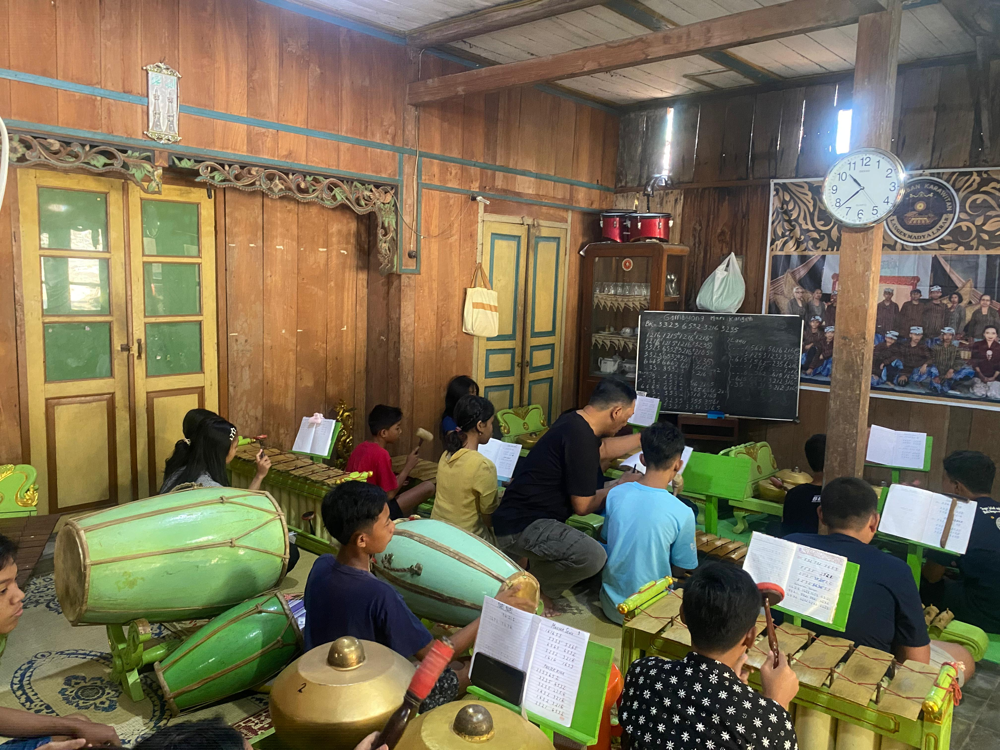
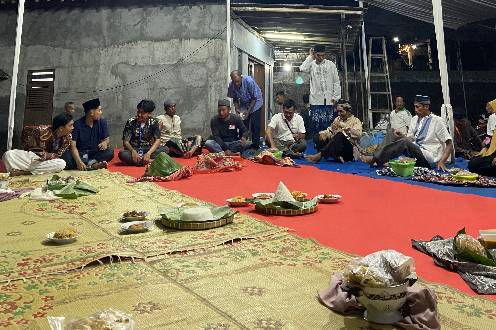
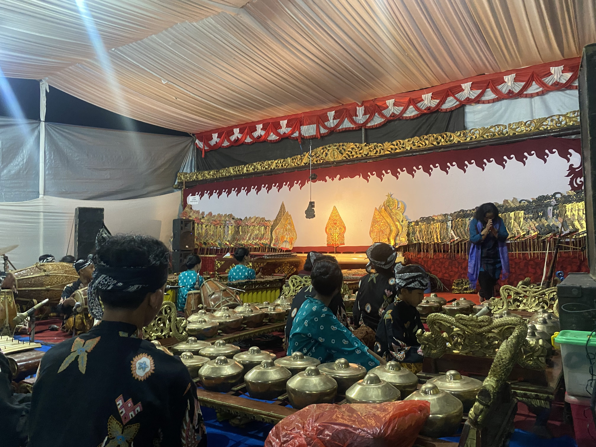
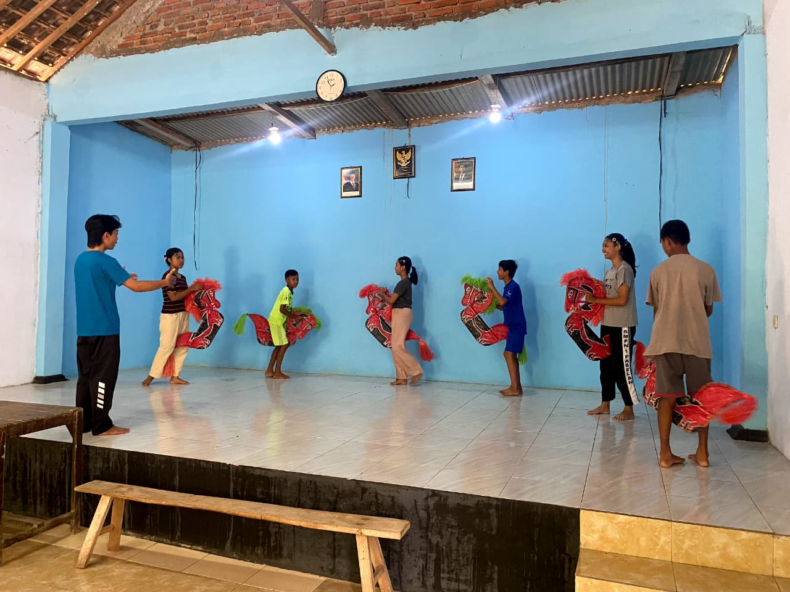

Galeri Lengkap Desa Tlompakan
Potret lengkap kehidupan dan aktivitas seni budaya Desa Tlompakan

Melatih anak-anak generasi penerus musik karawitan

Suasana prosesi selametan untuk merti dusun

Pertunjukkan seni tari

Karawitan Langen Madyo laras sedang melaksanakan pentas dalam acara merti dusun Muludan
Kegiatan tawu kali yg dilaksanakan bersama-sama oleh warga desa tlompakan

Pemandangan Indah Desa Tlompakan

Prosesi dawuhan sekaligus pemandangan sungai pada desa Tlompakan
Kesenian tarian prajuritan jarananan anak-anak Desa Tlompakan

Kegiatan warga melaksankan Dawuhan
Suasana desa saat melakukan nyadran

Foto bersama PPKORMAWA UNW & Pelaku kesenian Langen Madya Laras sebelum pentas

Kegiatan latihan Ibu-ibu Desa Tlompakan memainkan lesung yg dipadukan bersama alunan gending/lagu

Suasana Latihan anak-anak desa Tlompakan memainkan gamelan guna melestarikan budaya & adat jawa
Dokumentasi Penampilan Ibu-ibu Desa Tlompakan memainkan musik lesung
Dokumentasi Penampilan Ibu-ibu Desa Tlompakan memainkan musik lesung

Suasana latihan tari prajuritan jaranan oleh anak-anak Desa Tlompakan